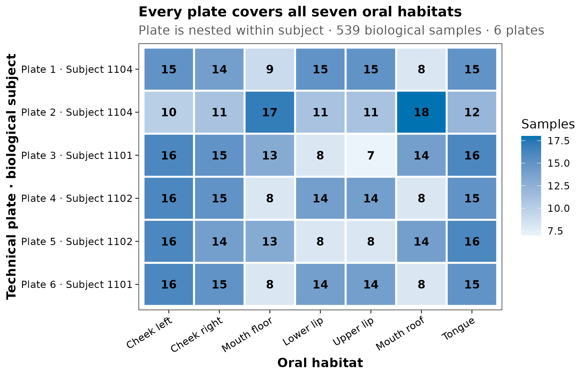
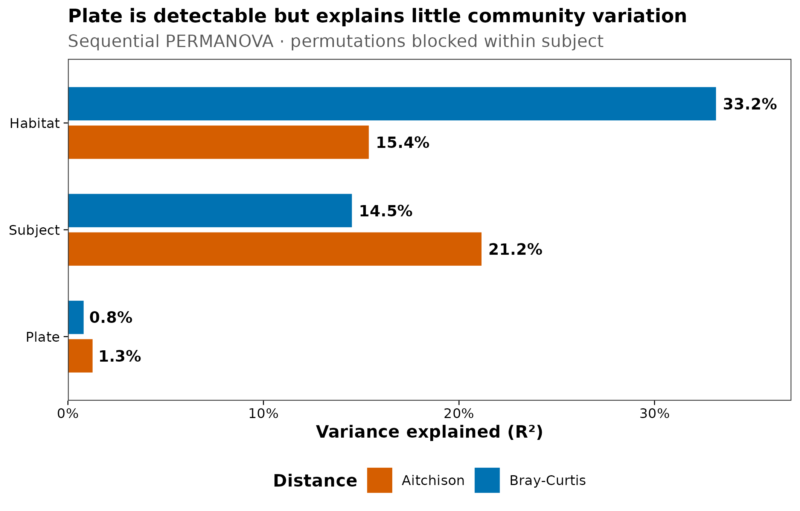
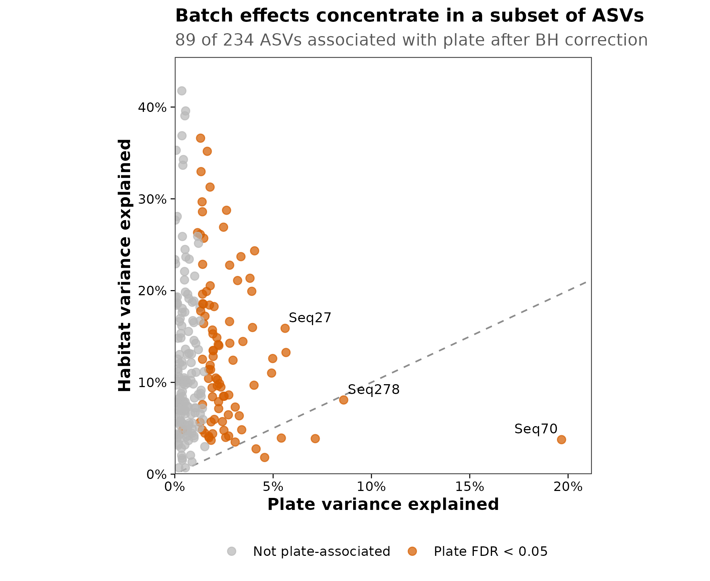
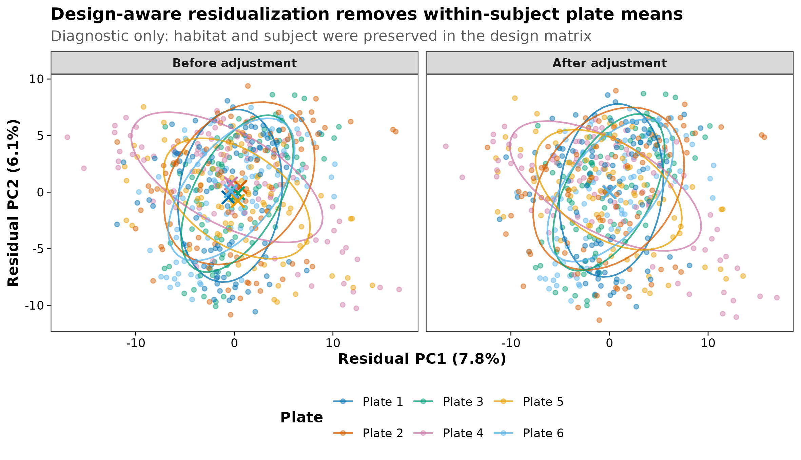

options(timeout = 600)
data_url <- "https://raw.githubusercontent.com/petemeng/microbiome-best-practices/3cb6a817e0c73ab7ecbec1cedc1ad80cbb9ecfaa/"
input_files <- c(
"data/small/decontam/metadata.tsv",
"data/small/decontam/otutab.tsv",
"data/small/decontam/source_summary.json",
"data/small/decontam/taxonomy.tsv"
)
for (path in input_files) {
dir.create(dirname(path), recursive = TRUE, showWarnings = FALSE)
if (!file.exists(path)) download.file(paste0(data_url, path), path, mode = "wb", quiet = TRUE)
}批次效应：来源、检测与校正策略
先区分生物差异与技术批次
批次效应（batch effect）不是“PCoA 上按批次上色看起来没分开”就可以排除。论文中至少应留下四类证据：
- 生物分组在各批次中的样本数，证明批次与研究变量可以区分；
- 批次、研究变量与个体对群落差异的解释率，而不只给显著性；
- feature 层面的批次影响和多重检验结果；
- 主分析、批次控制模型和删去单一批次后的敏感性结果。
本篇使用 decontam 1.24.0 随包分发的真实 MUClite.rds 数据。对象包含 539 个口腔生物样本、30 个阴性对照、3 位受试者、7 个口腔部位和 6 块实验板。每位受试者分布在两块板上，每块板又覆盖全部 7 个部位，因此可以估计“同一受试者内部的板间差异”；但 plate 与 subject 仍是嵌套关系，不能把板间差异简单宣布为纯技术效应。
重要先判断能不能分，再谈怎么校正
如果所有病例都在 Batch 1、所有对照都在 Batch 2，Group 与 Batch 完全共线。此时不存在能从这批数据中唯一分离“疾病效应”和“批次效应”的统计方法。ComBat、ConQuR、MMUPHin 或任何深度模型都不能凭空创造缺失的交叉设计；强行校正只是在不可识别的信号之间做未经验证的分配。
下载并读取本次分析的数据
需要 R，以及 MMUPHin、decontam、ggplot2、scales、vegan。本次使用口腔样本与阴性对照的三张表；实验板、受试者和口腔部位均保留在样本表中。
在一个新建的文件夹中运行以下代码，下载文件后按文中的顺序继续分析：
library(decontam)
library(vegan)
library(ggplot2)
stopifnot(
identical(
as.character(utils::packageVersion("decontam")),
"1.24.0"
),
identical(
as.character(utils::packageVersion("vegan")),
"2.6.6.1"
)
)
set.seed(20260719)
pal_pub <- c(
"#0072B2", "#D55E00", "#009E73", "#CC79A7",
"#E69F00", "#56B4E9", "#F0E442", "#999999"
)
scale_color_pub <- function(...) {
ggplot2::scale_color_manual(values = pal_pub, ...)
}
scale_fill_pub <- function(...) {
ggplot2::scale_fill_manual(values = pal_pub, ...)
}
theme_pub <- function(base_size = 12) {
ggplot2::theme_bw(base_size = base_size, base_family = "sans") +
ggplot2::theme(
panel.grid = ggplot2::element_blank(),
axis.text = ggplot2::element_text(color = "black"),
axis.ticks = ggplot2::element_line(
color = "black",
linewidth = 0.3
),
legend.key = ggplot2::element_blank(),
legend.background = ggplot2::element_rect(
fill = scales::alpha("white", 0.7),
color = NA
)
)
}
save_pub <- function(
plot,
file_base,
width = 120,
height = 95,
units = "mm",
dpi = 300
) {
dir.create(
dirname(file_base),
recursive = TRUE,
showWarnings = FALSE
)
ggplot2::ggsave(
paste0(file_base, ".pdf"),
plot,
width = width,
height = height,
units = units,
device = grDevices::cairo_pdf
)
ggplot2::ggsave(
paste0(file_base, ".png"),
plot,
width = width,
height = height,
units = units,
dpi = dpi,
bg = "white"
)
ggplot2::ggsave(
paste0(file_base, ".tiff"),
plot,
width = width,
height = height,
units = units,
dpi = dpi,
compression = "lzw",
bg = "white"
)
}从三件套读取并核对 batch metadata
otutab <- read.delim(
"data/small/decontam/otutab.tsv",
row.names = 1,
check.names = FALSE
)
taxonomy <- read.delim(
"data/small/decontam/taxonomy.tsv",
row.names = 1,
check.names = FALSE
)
metadata <- read.delim(
"data/small/decontam/metadata.tsv",
row.names = 1,
check.names = FALSE
)
otutab <- as.matrix(otutab)
storage.mode(otutab) <- "numeric"
metadata$IsNegative <- as.logical(metadata$IsNegative)
stopifnot(
identical(rownames(otutab), rownames(taxonomy)),
identical(colnames(otutab), rownames(metadata)),
all(otutab >= 0),
all(otutab == floor(otutab)),
all(c(
"PlateNumber",
"Subject",
"Habitat",
"quant_reading",
"IsNegative"
) %in% colnames(metadata)),
all(metadata$quant_reading > 0)
)
dim(otutab)
otutab[1:5, 1:5]
taxonomy[1:5, , drop = FALSE]
head(metadata)[1] 1951 569
P1101C01701R00 P1101C01702R00 P1101C01703R00 P1101C08701R00 P1101C08702R00
Seq1 3502 12040 9877 4035 12491
Seq2 8391 152 2401 5706 1444
Seq3 0 0 0 0 0
Seq4 193 7924 4333 257 4384
Seq5 2838 0 0 3161 294
Kingdom Phylum Class Order
Seq1 Bacteria Firmicutes Bacilli Lactobacillales
Seq2 Bacteria Proteobacteria Gammaproteobacteria Pasteurellales
Seq3 Bacteria unknown unknown unknown
Seq4 Bacteria Proteobacteria Gammaproteobacteria Pasteurellales
Seq5 Bacteria Proteobacteria Betaproteobacteria Neisseriales
Family Genus
Seq1 Streptococcaceae Streptococcus
Seq2 Pasteurellaceae Haemophilus
Seq3 unknown unknown
Seq4 Pasteurellaceae Haemophilus
Seq5 Neisseriaceae Neisseria
X.SampleID PlateNumber Subject Habitat quant_reading
P1101C01701R00 P1101C01701R00 3 1101 Tongue 2829
P1101C01702R00 P1101C01702R00 3 1101 Cheek_Right 5808
P1101C01703R00 P1101C01703R00 3 1101 Cheek_Left 5052
P1101C08701R00 P1101C08701R00 3 1101 Tongue 1227
P1101C08702R00 P1101C08702R00 3 1101 Cheek_Right 3872
P1101C08703R00 P1101C08703R00 3 1101 Cheek_Left 5872
Sample_or_Control IsNegative
P1101C01701R00 True Sample FALSE
P1101C01702R00 True Sample FALSE
P1101C01703R00 True Sample FALSE
P1101C08701R00 True Sample FALSE
P1101C08702R00 True Sample FALSE
P1101C08703R00 True Sample FALSE原始对象包含 1,951 个 ASV 和 569 个测序样本，其中 30 个为阴性对照。批次分析前不能忽略污染：若某一提取板的 reagent background 更高，污染本身就会表现为 batch effect。
下载完整 R 脚本。脚本包含数据下载、计算和图形导出。
首次使用时安装 R 包
install.packages(c(
"BiocManager", "vegan", "ggplot2", "scales", "digest"
))
BiocManager::install(version = "3.19", ask = FALSE)
BiocManager::install(
c("decontam", "MMUPHin", "phyloseq"),
ask = FALSE,
update = FALSE
)批次从哪里来，为什么不能见到就删
从采样到统计模型，每一层都可能形成批次
| 阶段 | 常见批次来源 | 建议保留的 metadata |
|---|---|---|
| Sampling | 日期、中心、操作者、季节、运输路线 | CollectionDate, Site, Collector |
| Storage | 保存液、温度、冻融次数、保存时长 | Preservative, FreezeThaw, StorageDays |
| Extraction | kit lot、提取板、机器人、实验人员 | ExtractionBatch, KitLot, PlateRow/Column |
| PCR | primer lot、循环数、PCR plate | PCRBatch, PrimerLot, PCRCycles |
| Sequencing | run、lane、flow cell、index set | SequencingRun, Lane, IndexSet |
| Bioinformatics | 引物、截断长度、数据库、软件版本 | PipelineVersion, ClassifierVersion |
同一天、同一块板或同一个研究中心产生的相似性，可能来自技术流程，也可能包含真实的空间、时间或人群差异。批次变量的定义不是“我不感兴趣的列”，而是需要结合采样流程、随机化记录和研究问题解释的变异来源。
区分技术批次、生物学区组与混杂因素
- Technical batch：本希望相同的样本因提取板、试剂批号或测序 run 不同而产生系统差异。
- Biological block：subject、cage、plot、center 等会让样本相关，但这种相关本身可能具有生物意义。
- Confounder：同时与暴露/分组和结局相关，导致目标效应无法直接解释。
例如 cage 既可能是需要控制的笼位效应，也可能通过共食粪便真实改变肠道微生物。把 cage 影响从丰度表中“抹平”不等于获得更真实的数据；更稳妥的做法通常是在设计和模型中承认 cage 这一层级。
三种设计决定了可做的分析
| Batch × biology 关系 | 例子 | 能否估计批次 | 首选策略 |
|---|---|---|---|
| Crossed / balanced | 每个批次都有病例与对照 | 可以 | 模型中加入 batch；必要时做经过验证的校正 |
| Partially crossed | 部分批次缺少某一组 | 有限 | 限制比较范围、分层/混合模型、敏感性分析 |
| Completely confounded | Batch 1 全病例，Batch 2 全对照 | 不可以 | 补测桥接样本、重新设计或弱化问题 |
用设计矩阵表示时，完全混杂会导致矩阵不满秩：
\[ \operatorname{rank}(\mathbf{X}) < \operatorname{ncol}(\mathbf{X}) \]
这不是软件报错技巧问题，而是数据没有提供足够信息。
同时检查批次效应大小与组内离散程度
PCoA/PCA 只展示前几个方向，批次也可能影响稀有 feature、零比例、方差或高阶分布。一个基本诊断组合是：
- 设计交叉表与 library/QC 分布；
- Bray-Curtis、Aitchison 等不同距离下的 PERMANOVA \(R^2\)；
- 与 PERMANOVA 配套的 multivariate dispersion；
- feature-wise 模型，并做 Benjamini-Hochberg FDR；
- leave-one-batch-out 或 within-batch 敏感性分析。
大样本中很小的批次效应也可能得到极小的 \(P\) 值。反过来，批次数很少时，一个肉眼明显的差异也可能没有足够的批次级自由度。结论应首先看设计和效应量，再看显著性。
“控制 batch”优先于“改写数据”
从稳妥到激进，可按下列顺序决策：
- 实验阶段预防：随机分板、平衡分组、桥接样本、阴性/阳性对照；
- 统计模型控制：把 batch 作为固定效应、随机效应或 permutation block；
- 分层与 meta-analysis：先在 batch/study 内估计，再合并效应；
- 生成校正后的 profile：仅在设计可识别、方法与数据类型匹配且生物信号保留得到验证时使用；
- 补测或缩小问题：完全混杂时增加 bridge samples，或只回答批次内可识别的问题。
Wang 与 Lê Cao系统总结了微生物组 batch 的来源、设计条件和方法假设；Gibbons 等证明常规 omics 校正可能在微生物组 case-control 合并中制造或掩盖信号；ConQuR与 MMUPHin则针对零膨胀、过度离散和多队列结构提供了更专门的方法。
深入：为什么本篇不把 ComBat 后的丰度表当默认答案
16S 计数具有稀疏、过度离散和成分性。对相对丰度逐 feature 做高斯位置/尺度校正，可能：
- 产生负值或破坏每个样本总和；
- 把真实但与 batch 相关的生物差异一并删除；
- 改变零值、稀有 feature 与相关结构；
- 在全数据上先校正再交叉验证，造成测试集信息泄漏；
- 让排序图“混得更好”，但下游分类或差异结果更差。
因此本篇的矩阵调整只作为设计矩阵是否按预期工作的诊断：先保留 habitat 与 subject 的模型项，再减去每位 subject 内的 plate 均值对比。它不是 ConQuR、MMUPHin 或 ComBat 的替代品，也不作为后续差异丰度的默认输入。正式推断仍优先在每个方法自己的模型中加入 batch。
区分部位、受试者与实验板的影响
在本篇内完成污染判定，再保留生物样本
seqtab <- t(otutab)
contam_combined <- decontam::isContaminant(
seqtab,
method = "combined",
conc = metadata$quant_reading,
neg = metadata$IsNegative,
threshold = 0.10
)
contaminant_ids <- rownames(contam_combined)[
contam_combined$contaminant
]
biological_ids <- rownames(metadata)[
!metadata$IsNegative
]
otutab_bio <- otutab[
setdiff(rownames(otutab), contaminant_ids),
biological_ids,
drop = FALSE
]
taxonomy_bio <- taxonomy[
rownames(otutab_bio),
,
drop = FALSE
]
metadata_bio <- metadata[
biological_ids,
,
drop = FALSE
]
stopifnot(
identical(
rownames(otutab_bio),
rownames(taxonomy_bio)
),
identical(
colnames(otutab_bio),
rownames(metadata_bio)
)
)
data.frame(
ContaminantsRemoved = length(contaminant_ids),
BiologicalSamples = ncol(otutab_bio),
RetainedASVs = nrow(otutab_bio)
) ContaminantsRemoved BiologicalSamples RetainedASVs
1 56 539 1895本例标记并移除 56 个候选污染 ASV，保留 1895 个 ASV 和 539 个生物样本。阴性对照不进入后续生物群落模型，但原始三件套与 classifier 结果始终保留。
先画设计矩阵，不从排序图开始
habitat_labels <- c(
"Cheek_Left" = "Cheek left",
"Cheek_Right" = "Cheek right",
"Floor" = "Mouth floor",
"Lip_Lower" = "Lower lip",
"Lip_Upper" = "Upper lip",
"Roof" = "Mouth roof",
"Tongue" = "Tongue"
)
habitat_levels <- unname(habitat_labels)
metadata_bio$Habitat <- factor(
unname(habitat_labels[metadata_bio$Habitat]),
levels = habitat_levels
)
metadata_bio$Subject <- factor(
paste("Subject", metadata_bio$Subject)
)
metadata_bio$Plate <- factor(
paste("Plate", metadata_bio$PlateNumber),
levels = paste("Plate", 1:6)
)
plate_subject_table <- with(
metadata_bio,
table(Plate, Subject)
)
plate_habitat_table <- with(
metadata_bio,
table(Plate, Habitat)
)
plate_subject_table
plate_habitat_table
stopifnot(
all(rowSums(plate_subject_table > 0) == 1),
all(colSums(plate_subject_table > 0) == 2),
all(plate_habitat_table > 0)
)
plate_subject_map <- unique(
metadata_bio[c("Plate", "Subject")]
)
plate_subject_map <- plate_subject_map[
order(plate_subject_map$Plate),
,
drop = FALSE
]
design_counts <- as.data.frame(
plate_habitat_table,
responseName = "Samples"
)
design_counts$Subject <- plate_subject_map$Subject[
match(design_counts$Plate, plate_subject_map$Plate)
]
design_counts$PlateSubject <- factor(
paste(
design_counts$Plate,
design_counts$Subject,
sep = " · "
),
levels = rev(
paste(
plate_subject_map$Plate,
plate_subject_map$Subject,
sep = " · "
)
)
)
head(design_counts) Subject
Plate Subject 1101 Subject 1102 Subject 1104
Plate 1 0 0 91
Plate 2 0 0 90
Plate 3 89 0 0
Plate 4 0 90 0
Plate 5 0 89 0
Plate 6 90 0 0
Habitat
Plate Cheek left Cheek right Mouth floor Lower lip Upper lip Mouth roof
Plate 1 15 14 9 15 15 8
Plate 2 10 11 17 11 11 18
Plate 3 16 15 13 8 7 14
Plate 4 16 15 8 14 14 8
Plate 5 16 14 13 8 8 14
Plate 6 16 15 8 14 14 8
Habitat
Plate Tongue
Plate 1 15
Plate 2 12
Plate 3 16
Plate 4 15
Plate 5 16
Plate 6 15
Plate Habitat Samples Subject PlateSubject
1 Plate 1 Cheek left 15 Subject 1104 Plate 1 · Subject 1104
2 Plate 2 Cheek left 10 Subject 1104 Plate 2 · Subject 1104
3 Plate 3 Cheek left 16 Subject 1101 Plate 3 · Subject 1101
4 Plate 4 Cheek left 16 Subject 1102 Plate 4 · Subject 1102
5 Plate 5 Cheek left 16 Subject 1102 Plate 5 · Subject 1102
6 Plate 6 Cheek left 16 Subject 1101 Plate 6 · Subject 1101每块板都覆盖全部 7 个 habitat，单格 7–18 个样本；每位 subject 分布在两块板上。因而 habitat 与 plate 是交叉的，但 plate 嵌套在 subject 内。后续模型按 Habitat + Subject + Plate 的顺序估计：Plate 项表示控制 habitat 和 subject 后剩余的 subject 内板间差异。
同时检查 Bray-Curtis 与 Aitchison 距离
Bray-Curtis 使用污染过滤后的相对丰度。Aitchison 距离先保留至少 5% 生物样本中检出的 ASV，再加 0.5 pseudocount 做 centered log-ratio（CLR）：
relative_abundance <- sweep(
otutab_bio,
2,
colSums(otutab_bio),
"/"
)
bray_distance <- vegan::vegdist(
t(relative_abundance),
method = "bray"
)
feature_prevalence <- rowMeans(otutab_bio > 0)
clr_feature_ids <- names(feature_prevalence)[
feature_prevalence >= 0.05
]
clr_counts <- otutab_bio[
clr_feature_ids,
,
drop = FALSE
]
clr_matrix <- t(
apply(
t(clr_counts) + 0.5,
1,
function(x) {
log(x) - mean(log(x))
}
)
)
rownames(clr_matrix) <- colnames(clr_counts)
colnames(clr_matrix) <- rownames(clr_counts)
stopifnot(
nrow(clr_matrix) == nrow(metadata_bio),
max(abs(rowSums(clr_matrix))) < 1e-10
)
aitchison_distance <- stats::dist(clr_matrix)
dim(clr_matrix)[1] 539 234这里进入 CLR 诊断的有 234 个 ASV。pseudocount 是零值处理假设，不是“恢复真实绝对丰度”；因此 Bray-Curtis 与 Aitchison 结果都报告，避免把单一变换当成唯一真相。
PERMANOVA 报告 \(R^2\)，并限制置换范围
run_permanova <- function(distance_object) {
set.seed(20260719)
vegan::adonis2(
distance_object ~ Habitat + Subject + Plate,
data = metadata_bio,
permutations = 999,
by = "terms",
strata = metadata_bio$Subject
)
}
extract_permanova <- function(model, metric) {
term_names <- c("Habitat", "Subject", "Plate")
data.frame(
Metric = metric,
Test = "PERMANOVA",
Term = term_names,
Df = model[term_names, "Df"],
R2 = model[term_names, "R2"],
F = model[term_names, "F"],
P = model[term_names, "Pr(>F)"],
row.names = NULL
)
}
bray_permanova <- run_permanova(bray_distance)
aitchison_permanova <- run_permanova(
aitchison_distance
)
community_terms <- rbind(
extract_permanova(
bray_permanova,
"Bray-Curtis"
),
extract_permanova(
aitchison_permanova,
"Aitchison"
)
)
community_terms Metric Test Term Df R2 F P
1 Bray-Curtis PERMANOVA Habitat 6 0.331658368 56.604034 0.001
2 Bray-Curtis PERMANOVA Subject 2 0.145446194 74.469775 0.001
3 Bray-Curtis PERMANOVA Plate 3 0.008256147 2.818148 0.002
4 Aitchison PERMANOVA Habitat 6 0.154092222 21.782307 0.001
5 Aitchison PERMANOVA Subject 2 0.211732108 89.790652 0.001
6 Aitchison PERMANOVA Plate 3 0.012825795 3.626080 0.001Bray-Curtis 下，habitat、subject 和 plate 分别解释 33.2%、14.5% 和 0.83%。Aitchison 下对应为 15.4%、21.2% 和 1.28%。
plate 项在两种距离下都达到置换显著，但解释率只有约 1%。这正说明“大样本 \(P\) 值很小”不等于“batch 主导整个数据”。
PERMANOVA 必须配 dispersion
run_dispersion <- function(distance_object, metric) {
dispersion <- vegan::betadisper(
distance_object,
metadata_bio$Plate,
bias.adjust = TRUE
)
set.seed(20260719)
test <- vegan::permutest(
dispersion,
permutations = 999
)
data.frame(
Metric = metric,
Test = "PERMDISP",
Term = "Plate dispersion",
Df = unname(test$tab[1, "Df"]),
R2 = NA_real_,
F = unname(test$tab[1, "F"]),
P = unname(test$tab[1, "Pr(>F)"])
)
}
dispersion_results <- rbind(
run_dispersion(
bray_distance,
"Bray-Curtis"
),
run_dispersion(
aitchison_distance,
"Aitchison"
)
)
dispersion_results
community_diagnostics <- rbind(
community_terms,
dispersion_results
) Metric Test Term Df R2 F P
1 Bray-Curtis PERMDISP Plate dispersion 5 NA 0.3058414 0.903
2 Aitchison PERMDISP Plate dispersion 5 NA 5.6389361 0.001Bray-Curtis 的 plate dispersion \(P=0.903\)，Aitchison 的 \(P=0.001\)。因此 Aitchison 下的 plate PERMANOVA 既可能包含 centroid shift，也受到组内离散度差异影响，不能只解释为板间均值位移。
feature-wise 模型：做 FDR，也报告解释率
fit_feature_model <- function(y) {
fit <- stats::lm(
y ~ Habitat + Subject + Plate,
data = metadata_bio
)
tab <- stats::anova(fit)
total_ss <- sum(tab[, "Sum Sq"])
c(
HabitatP = tab["Habitat", "Pr(>F)"],
HabitatR2 = tab["Habitat", "Sum Sq"] / total_ss,
SubjectP = tab["Subject", "Pr(>F)"],
SubjectR2 = tab["Subject", "Sum Sq"] / total_ss,
PlateP = tab["Plate", "Pr(>F)"],
PlateR2 = tab["Plate", "Sum Sq"] / total_ss
)
}
feature_model_matrix <- t(
apply(
clr_matrix,
2,
fit_feature_model
)
)
feature_model_table <- as.data.frame(
feature_model_matrix
)
feature_model_table <- feature_model_table[
colnames(clr_matrix),
,
drop = FALSE
]
feature_model_table$HabitatQ <- stats::p.adjust(
feature_model_table$HabitatP,
method = "BH"
)
feature_model_table$PlateQ <- stats::p.adjust(
feature_model_table$PlateP,
method = "BH"
)
feature_diagnostics <- data.frame(
FeatureID = colnames(clr_matrix),
taxonomy_bio[
colnames(clr_matrix),
,
drop = FALSE
],
Prevalence = feature_prevalence[
colnames(clr_matrix)
],
TotalReads = rowSums(
otutab_bio[
colnames(clr_matrix),
,
drop = FALSE
]
),
feature_model_table,
check.names = FALSE,
row.names = NULL
)
feature_summary <- data.frame(
TestedASVs = nrow(feature_diagnostics),
HabitatFDR05 = sum(
feature_diagnostics$HabitatQ < 0.05
),
PlateFDR05 = sum(
feature_diagnostics$PlateQ < 0.05
),
MedianHabitatR2 = stats::median(
feature_diagnostics$HabitatR2
),
MedianPlateR2 = stats::median(
feature_diagnostics$PlateR2
)
)
feature_summary TestedASVs HabitatFDR05 PlateFDR05 MedianHabitatR2 MedianPlateR2
1 234 227 89 0.1029612 0.009137755在 234 个高检出 ASV 中，89 个的 plate 项达到 BH FDR < 0.05，227 个的 habitat 项达到 FDR < 0.05。median plate \(R^2\) 为 0.91%，明显低于 median habitat \(R^2\) 的 10.3%；但少数 feature 的 plate \(R^2\) 很大，不能用群落总体的 1% 替代 feature 审计。
本对象没有完整的纵向时间与采样事件字段，因此这里的 feature 模型是 batch diagnostic，不用于宣称总体人群中的口腔部位差异。真实重复测量研究应加入 time/visit，并按 subject 使用 mixed model 或其他相关结构。
leave-one-plate-out：结论是否被某块板推动
leave_one_plate_out <- do.call(
rbind,
lapply(
levels(metadata_bio$Plate),
function(dropped_plate) {
keep_samples <- (
metadata_bio$Plate != dropped_plate
)
metadata_subset <- droplevels(
metadata_bio[
keep_samples,
,
drop = FALSE
]
)
model <- vegan::adonis2(
stats::dist(
clr_matrix[
keep_samples,
,
drop = FALSE
]
) ~ Habitat + Subject + Plate,
data = metadata_subset,
permutations = 0,
by = "terms"
)
data.frame(
DroppedPlate = dropped_plate,
Samples = sum(keep_samples),
HabitatR2 = model["Habitat", "R2"],
SubjectR2 = model["Subject", "R2"],
PlateR2 = model["Plate", "R2"]
)
}
)
)
leave_one_plate_out DroppedPlate Samples HabitatR2 SubjectR2 PlateR2
1 Plate 1 448 0.1737826 0.1871002 0.010784273
2 Plate 2 449 0.1755791 0.1976209 0.010664454
3 Plate 3 450 0.1591675 0.2033370 0.011520525
4 Plate 4 449 0.1535751 0.2282777 0.008605357
5 Plate 5 450 0.1615562 0.2177663 0.008477921
6 Plate 6 449 0.1545828 0.2051161 0.011658159删去任一板后，Aitchison habitat \(R^2\) 保持在 15.4%–17.6%，plate \(R^2\) 保持在 0.85%–1.17%。这比只报告全数据的一次 \(P\) 值更能说明结果不是由某一块板单独推动。
设计感知的 adjustment 只用于诊断
因为每位 subject 恰好分布在两块板上，可以为每位 subject 构造一个板间对比：该 subject 的两块板分别记为 \(-0.5\) 和 \(+0.5\)，其他 subject 记为 0。模型先保留 habitat 与 subject，再估计三个 subject 内 plate contrast：
x_biology <- stats::model.matrix(
~ Habitat + Subject,
data = metadata_bio
)
subject_levels <- levels(metadata_bio$Subject)
plate_contrasts <- sapply(
subject_levels,
function(subject_level) {
subject_plates <- sort(
unique(
as.character(
metadata_bio$Plate[
metadata_bio$Subject == subject_level
]
)
)
)
stopifnot(length(subject_plates) == 2)
ifelse(
metadata_bio$Subject == subject_level &
metadata_bio$Plate == subject_plates[1],
-0.5,
ifelse(
metadata_bio$Subject == subject_level &
metadata_bio$Plate == subject_plates[2],
0.5,
0
)
)
}
)
colnames(plate_contrasts) <- paste0(
"Within_",
gsub(" ", "_", subject_levels)
)
x_full <- cbind(
x_biology,
plate_contrasts
)
stopifnot(qr(x_full)$rank == ncol(x_full))
all_coefficients <- qr.coef(
qr(x_full),
clr_matrix
)
batch_rows <- (
ncol(x_biology) + 1
):ncol(x_full)
batch_coefficients <- all_coefficients[
batch_rows,
,
drop = FALSE
]
clr_adjusted_diagnostic <- (
clr_matrix -
plate_contrasts %*% batch_coefficients
)
adjustment_coefficients <- data.frame(
FeatureID = colnames(clr_matrix),
t(batch_coefficients),
check.names = FALSE,
row.names = NULL
)
head(adjustment_coefficients) FeatureID Within_Subject_1101 Within_Subject_1102 Within_Subject_1104
1 Seq1 0.019369842 -0.18737604 0.09790848
2 Seq2 0.149241680 -0.20890674 -0.24005929
3 Seq4 -0.074662655 -0.52025310 -0.82230694
4 Seq5 -0.288988968 -0.27631239 0.63444291
5 Seq6 0.004305498 0.01647426 0.06487136
6 Seq7 0.165869770 0.77274424 0.13103499用相同公式重新计算 Aitchison PERMANOVA：
adjusted_aitchison <- stats::dist(
clr_adjusted_diagnostic
)
adjusted_permanova <- run_permanova(
adjusted_aitchison
)
adjusted_terms <- extract_permanova(
adjusted_permanova,
"Aitchison after diagnostic adjustment"
)
adjustment_diagnostic <- rbind(
transform(
community_terms[
community_terms$Metric == "Aitchison",
,
drop = FALSE
],
Stage = "Before adjustment"
),
transform(
adjusted_terms,
Stage = "After adjustment"
)
)
adjustment_diagnostic Metric Test Term Df R2
4 Aitchison PERMANOVA Habitat 6 0.15409222
5 Aitchison PERMANOVA Subject 2 0.21173211
6 Aitchison PERMANOVA Plate 3 0.01282579
1 Aitchison after diagnostic adjustment PERMANOVA Habitat 6 0.15656874
2 Aitchison after diagnostic adjustment PERMANOVA Subject 2 0.21432836
3 Aitchison after diagnostic adjustment PERMANOVA Plate 3 0.00000000
F P Stage
4 21.78231 0.001 Before adjustment
5 89.79065 0.001 Before adjustment
6 3.62608 0.001 Before adjustment
1 21.85963 0.001 After adjustment
2 89.77152 0.001 After adjustment
3 0.00000 1.000 After adjustmentplate \(R^2\) 从 1.28% 变为 0.00%。后者为 0 是这一步在同一数据上按定义减去 plate contrast 的代数结果，不是外部验证，更不证明所有技术偏差已经消失。
下面只为可视化检查，在保留/调整后的 CLR 中进一步回归掉 habitat 与 subject，并把两组 residual 投影到同一个 PCA 基底：
residualize_biology <- function(x) {
stats::lm.fit(
x = x_biology,
y = x
)$residuals
}
residual_before <- residualize_biology(
clr_matrix
)
residual_after <- residualize_biology(
clr_adjusted_diagnostic
)
pca_reference <- stats::prcomp(
residual_before,
center = TRUE,
scale. = FALSE
)
scores_before <- pca_reference$x[, 1:2]
scores_after <- (
scale(
residual_after,
center = pca_reference$center,
scale = FALSE
) %*%
pca_reference$rotation[, 1:2]
)
pca_variance <- (
pca_reference$sdev^2 /
sum(pca_reference$sdev^2)
)
ordination_scores <- rbind(
data.frame(
SampleID = rownames(metadata_bio),
Stage = "Before adjustment",
PC1 = scores_before[, 1],
PC2 = scores_before[, 2],
Plate = metadata_bio$Plate,
Subject = metadata_bio$Subject
),
data.frame(
SampleID = rownames(metadata_bio),
Stage = "After adjustment",
PC1 = scores_after[, 1],
PC2 = scores_after[, 2],
Plate = metadata_bio$Plate,
Subject = metadata_bio$Subject
)
)
ordination_scores$Stage <- factor(
ordination_scores$Stage,
levels = c(
"Before adjustment",
"After adjustment"
)
)
ordination_centroids <- aggregate(
cbind(PC1, PC2) ~ Stage + Plate,
data = ordination_scores,
FUN = mean
)
head(ordination_scores) SampleID Stage PC1 PC2 Plate
P1101C01701R00 P1101C01701R00 Before adjustment -6.4837762 -4.496292 Plate 3
P1101C01702R00 P1101C01702R00 Before adjustment 7.1004751 8.279408 Plate 3
P1101C01703R00 P1101C01703R00 Before adjustment 2.5507966 4.471334 Plate 3
P1101C08701R00 P1101C08701R00 Before adjustment -7.0804482 -6.741230 Plate 3
P1101C08702R00 P1101C08702R00 Before adjustment 0.1276878 4.982415 Plate 3
P1101C08703R00 P1101C08703R00 Before adjustment 6.1188412 8.573459 Plate 3
Subject
P1101C01701R00 Subject 1101
P1101C01702R00 Subject 1101
P1101C01703R00 Subject 1101
P1101C08701R00 Subject 1101
P1101C08702R00 Subject 1101
P1101C08703R00 Subject 1101导出完整审计轨迹
result_dir <- "results/05-batch"
dir.create(
result_dir,
recursive = TRUE,
showWarnings = FALSE
)
write_result <- function(x, filename) {
utils::write.table(
x,
file.path(result_dir, filename),
sep = "\t",
quote = FALSE,
row.names = FALSE,
na = ""
)
}
write_result(
design_counts,
"batch-design-counts.tsv"
)
write_result(
community_diagnostics,
"community-batch-diagnostics.tsv"
)
write_result(
feature_diagnostics,
"feature-batch-diagnostics.tsv"
)
write_result(
leave_one_plate_out,
"leave-one-plate-out.tsv"
)
write_result(
adjustment_diagnostic,
"adjustment-diagnostic.tsv"
)
write_result(
adjustment_coefficients,
"plate-adjustment-coefficients.tsv"
)
write_result(
ordination_scores,
"ordination-scores.tsv"
)这些文件分别回答“设计是否交叉”“群落层 batch 多大”“哪些 ASV 受影响”“删去哪一板是否改变结论”“诊断性 adjustment 做了什么”。不要只保存一张校正后 PCA；没有原始输入、模型矩阵和系数的校正结果不可审计。
判断校正是否保留了生物差异
Batch × habitat 设计热图
p_batch_design <- ggplot(
design_counts,
aes(
Habitat,
PlateSubject,
fill = Samples
)
) +
geom_tile(
color = "white",
linewidth = 0.8
) +
geom_text(
aes(label = Samples),
color = "black",
size = 3.5,
fontface = "bold"
) +
scale_fill_gradient(
low = "#EAF4FA",
high = "#0072B2",
limits = range(design_counts$Samples),
name = "Samples"
) +
labs(
title = "Every plate covers all seven oral habitats",
subtitle = paste0(
"Plate is nested within subject · ",
nrow(metadata_bio),
" biological samples · 6 plates"
),
x = "Oral habitat",
y = "Technical plate · biological subject"
) +
theme_pub(base_size = 11) +
theme(
plot.title = element_text(
face = "bold",
size = 12
),
plot.subtitle = element_text(
color = "grey35"
),
axis.text.x = element_text(
angle = 32,
hjust = 1
),
axis.title = element_text(face = "bold"),
legend.position = "right"
)
p_batch_designsave_pub(
p_batch_design,
"figures/05-batch-design-audit",
width = 180,
height = 115
)
群落层解释率
community_plot_data <- community_terms
community_plot_data$Term <- factor(
community_plot_data$Term,
levels = c("Plate", "Subject", "Habitat")
)
p_community_batch <- ggplot(
community_plot_data,
aes(
R2,
Term,
fill = Metric
)
) +
geom_col(
position = position_dodge(width = 0.72),
width = 0.64,
color = "white",
linewidth = 0.25
) +
geom_text(
aes(
label = scales::percent(
R2,
accuracy = 0.1
)
),
position = position_dodge(width = 0.72),
hjust = -0.12,
size = 3.5,
fontface = "bold"
) +
scale_fill_manual(
values = c(
"Bray-Curtis" = "#0072B2",
"Aitchison" = "#D55E00"
),
name = "Distance"
) +
scale_x_continuous(
labels = scales::percent_format(accuracy = 1),
limits = c(0, 0.37),
expand = expansion(mult = c(0, 0))
) +
labs(
title = "Plate is detectable but explains little community variation",
subtitle = "Sequential PERMANOVA · permutations blocked within subject",
x = "Variance explained (R²)",
y = NULL
) +
theme_pub(base_size = 11) +
theme(
plot.title = element_text(
face = "bold",
size = 12
),
plot.subtitle = element_text(
color = "grey35"
),
axis.title.x = element_text(face = "bold"),
legend.position = "bottom",
legend.title = element_text(face = "bold")
)
p_community_batchsave_pub(
p_community_batch,
"figures/05-community-batch-effects",
width = 180,
height = 115
)
Feature 层 effect-size landscape
feature_diagnostics$PlateStatus <- factor(
ifelse(
feature_diagnostics$PlateQ < 0.05,
"Plate FDR < 0.05",
"Not plate-associated"
),
levels = c(
"Not plate-associated",
"Plate FDR < 0.05"
)
)
label_feature_ids <- head(
feature_diagnostics$FeatureID[
order(feature_diagnostics$PlateQ)
],
3
)
feature_labels <- feature_diagnostics[
feature_diagnostics$FeatureID %in%
label_feature_ids,
,
drop = FALSE
]
feature_labels$LabelHjust <- ifelse(
feature_labels$PlateR2 > 0.15,
1.08,
-0.08
)
p_feature_batch <- ggplot(
feature_diagnostics,
aes(
PlateR2,
HabitatR2,
color = PlateStatus
)
) +
geom_abline(
slope = 1,
intercept = 0,
linetype = 2,
linewidth = 0.5,
color = "grey55"
) +
geom_point(
size = 2.2,
alpha = 0.72
) +
geom_text(
data = feature_labels,
aes(
label = FeatureID,
hjust = LabelHjust
),
nudge_y = 0.012,
color = "black",
size = 3.2,
check_overlap = TRUE,
show.legend = FALSE
) +
scale_color_manual(
values = c(
"Not plate-associated" = "#B8B8B8",
"Plate FDR < 0.05" = "#D55E00"
),
name = NULL
) +
scale_x_continuous(
labels = scales::percent_format(accuracy = 1),
limits = c(0, 0.21),
expand = expansion(mult = c(0, 0.01))
) +
scale_y_continuous(
labels = scales::percent_format(accuracy = 1),
limits = c(0, 0.45),
expand = expansion(mult = c(0, 0.01))
) +
coord_fixed(ratio = 0.21 / 0.45) +
labs(
title = "Batch effects concentrate in a subset of ASVs",
subtitle = paste0(
feature_summary$PlateFDR05,
" of ",
feature_summary$TestedASVs,
" ASVs associated with plate after BH correction"
),
x = "Plate variance explained",
y = "Habitat variance explained"
) +
theme_pub(base_size = 11) +
theme(
plot.title = element_text(
face = "bold",
size = 12
),
plot.subtitle = element_text(
color = "grey35"
),
axis.title = element_text(face = "bold"),
legend.position = "bottom"
)
p_feature_batchsave_pub(
p_feature_batch,
"figures/05-feature-batch-effects",
width = 165,
height = 135
)
Adjustment 前后诊断图
plate_colors <- setNames(
pal_pub[1:6],
levels(metadata_bio$Plate)
)
p_adjustment <- ggplot(
ordination_scores,
aes(
PC1,
PC2,
color = Plate
)
) +
geom_point(
size = 1.25,
alpha = 0.45
) +
stat_ellipse(
level = 0.68,
linewidth = 0.55,
alpha = 0.75
) +
geom_point(
data = ordination_centroids,
shape = 4,
size = 3.2,
stroke = 1.1,
show.legend = FALSE
) +
facet_wrap(
~ Stage,
nrow = 1
) +
scale_color_manual(
values = plate_colors
) +
labs(
title = "Design-aware residualization removes within-subject plate means",
subtitle = "Diagnostic only: habitat and subject were preserved in the design matrix",
x = paste0(
"Residual PC1 (",
scales::percent(
pca_variance[1],
accuracy = 0.1
),
")"
),
y = paste0(
"Residual PC2 (",
scales::percent(
pca_variance[2],
accuracy = 0.1
),
")"
),
color = "Plate"
) +
theme_pub(base_size = 10.5) +
theme(
plot.title = element_text(
face = "bold",
size = 12
),
plot.subtitle = element_text(
color = "grey35"
),
strip.text = element_text(face = "bold"),
axis.title = element_text(face = "bold"),
legend.position = "bottom",
legend.title = element_text(face = "bold")
)
p_adjustmentsave_pub(
p_adjustment,
"figures/05-adjustment-diagnostic",
width = 200,
height = 115
)
常见坑
注意Group 与 batch 完全混杂，还想靠软件救回来
先画 table(Batch, Group) 并检查 qr(model.matrix(~ Group + Batch))$rank。不满秩时，应补测桥接样本、缩小到批次内比较或明确承认不可识别；不要把校正后分组消失当作“批次去得很干净”。
注意把 subject、cage、site 全部当技术噪声删除
这些变量可能是真实生物层级。优先在 mixed model、stratified permutation 或分层 meta-analysis 中控制相关性，而不是直接从整个 feature table 中抹去它们。
注意只看 PCA/PCoA 是否按 batch 聚类
前两个轴没有分离不能排除 feature、零比例、方差或高阶分布上的批次。至少补充设计表、PERMANOVA \(R^2\)、dispersion、feature-wise FDR 和 sensitivity analysis。
注意只报 P 值，不报 batch R²
本例 plate 在两种距离下都显著，但仅解释约 1% 的群落差异。大样本容易让很小的偏差显著；审稿人需要知道它是否足以改变主要生物结论。
注意PERMANOVA 显著就断言 centroid shift
Aitchison 下 plate dispersion 也显著。位置与离散度可能共同贡献 PERMANOVA，因此必须配套 betadisper() / permutest()，并检查不同距离是否给出一致故事。
注意先校正全数据，再随机分训练集和测试集
校正模型已经看到测试集的 batch 与生物分布，会产生信息泄漏。预测任务应在每个训练折内估计预处理/校正参数，再应用到验证折；更严格的是按 batch 或 study 做外部验证。
注意把通用 ComBat 直接套到相对丰度
微生物组具有零膨胀、过度离散和成分性。方法必须匹配输入尺度和研究目的；需要生成校正后的 count/profile 时，评估 ConQuR、MMUPHin 等专门方法，并核对其设计假设。
注意认为 rarefaction、TSS 或 CLR 已经校正 batch
这些步骤改变测序深度或数据几何，不会自动消除 kit lot、plate、run 或 center 的系统差异。normalization 与 batch handling 是两个问题。
注意只展示校正后图，不展示校正前图和系数
至少保存原始三件套、设计矩阵、方法版本、保留变量、校正参数、前后图和关键生物效应。否则无法判断是去除了技术差异，还是删掉了真实信号。
注意忽略污染与 batch 的联动
某一提取板的 blank burden、kitome 或串样异常会表现为 batch effect。应先完成对照与污染审计，再判断剩余板间结构；低生物量项目尤其不能跳过这一步。
报告批次控制与敏感性分析的方法与限制
可直接修改的英文模板：
Batch design, diagnostics, and sensitivity analysis. Samples were randomized across [extraction/PCR/sequencing] batches while balancing [primary biological variables], and [number] negative plus [number] positive controls were included per batch. Batch metadata included [variables]. The batch-by-exposure design was inspected before analysis, and model-matrix rank was verified. After contaminant filtering, community structure was evaluated using [distances/transformations]. PERMANOVA models included [biological covariates] followed by [batch terms], with permutations restricted within [subject/site/block]; multivariate dispersion was assessed separately. Feature-wise [model] included batch as [fixed/random] effect, and P values were adjusted by the Benjamini-Hochberg method. The primary inference used unadjusted counts with batch represented in each statistical model. A batch-adjusted profile generated by [method, version, covariates preserved] was used only for [visualization/prediction] and was audited before and after adjustment. Robustness was assessed by [leave-one-batch-out/within-batch/meta-analysis] sensitivity analyses.
本例的可复现实写：
Worked batch diagnostic. The dataset comprised 539 biological oral samples from three subjects, seven oral habitats, and six technical plates after 56 candidate contaminant ASVs were removed with
decontam1.24.0. Each subject was represented on two plates, and every plate contained all seven habitats. Bray-Curtis distances were calculated from relative abundance; Aitchison distances were calculated from 234 ASVs detected in at least 5% of biological samples after adding a 0.5 pseudocount and applying the centered log-ratio transformation. Sequential PERMANOVA models included habitat, subject, and plate, with 999 permutations restricted within subject; plate dispersion was tested separately. Plate explained 0.83% of Bray-Curtis and 1.28% of Aitchison variation. Feature-wise CLR models identified 89 / 234 ASVs with a plate term at BH FDR < 0.05. Leave-one-plate-out analyses retained habitat Aitchison R² values between 15.4% and 17.6%. A design-matrix residualization preserving habitat and subject was used only as a visualization diagnostic, not as the input for biological inference.
Results 中应同时给出：
- 各组在 batch 中的样本数与缺失组合；
- batch 与主要协变量能否在设计矩阵中区分；
- 距离、变换、模型项顺序和 permutation block；
- batch 的 \(R^2\)、\(P\) 值与 dispersion；
- feature-wise FDR 数量和 effect-size 分布；
- 校正前后生物效应与批次效应；
- leave-one-batch-out、within-batch 或外部验证结果。
将批次控制与敏感性分析用于自己的研究
metadata 至少要有这些列
| 列名 | 类型 | 用途 |
|---|---|---|
Group |
factor | 主要暴露/处理/病例状态 |
Batch |
factor | 提取板、PCR plate 或 sequencing run |
SubjectID / PlotID |
factor | 独立实验单位与重复测量 |
Site / Center |
factor | 多中心或空间 block |
CollectionDate |
date/factor | 时间和季节 |
KitLot |
factor | 试剂批号 |
IsNegative |
logical | 阴性对照 |
LibrarySize / DNAConcentration |
numeric | QC 与低生物量诊断 |
不要把多个来源都压成一个含义模糊的 batch1/batch2。提取板、PCR plate、测序 run 和研究中心可能需要分别建模。
先做可识别性检查
otutab <- read.delim(
"your_data/otutab.tsv",
row.names = 1,
check.names = FALSE
)
taxonomy <- read.delim(
"your_data/taxonomy.tsv",
row.names = 1,
check.names = FALSE
)
metadata <- read.delim(
"your_data/metadata.tsv",
row.names = 1,
check.names = FALSE
)
otutab <- as.matrix(otutab)
storage.mode(otutab) <- "numeric"
stopifnot(
identical(rownames(otutab), rownames(taxonomy)),
identical(colnames(otutab), rownames(metadata))
)
design_table <- with(
metadata,
table(Batch, Group)
)
print(design_table)
x <- model.matrix(
~ Group + SubjectID + Batch,
data = metadata
)
if (qr(x)$rank < ncol(x)) {
stop(
paste(
"Group and batch are not identifiable.",
"Add bridge samples or restrict the question."
)
)
}设计平衡不要求每格完全相等，但主要生物水平必须在足够多的 batch 中重复出现。批次只有 1–2 个水平时，也很难把它当作可推广的随机效应。
默认在统计模型中加入 batch
relative_abundance <- sweep(
otutab,
2,
colSums(otutab),
"/"
)
distance <- vegan::vegdist(
t(relative_abundance),
method = "bray"
)
set.seed(20260719)
permanova <- vegan::adonis2(
distance ~ Group + Age + Sex + Batch,
data = metadata,
permutations = 999,
by = "margin",
strata = metadata$SubjectID
)
permanova
dispersion <- vegan::betadisper(
distance,
metadata$Batch,
bias.adjust = TRUE
)
set.seed(20260719)
vegan::permutest(
dispersion,
permutations = 999
)差异丰度、alpha diversity、纵向模型和预测模型都应在各自方法中处理 batch；不要因为生成过一次“校正表”就从所有下游模型中删除 batch。
什么时候考虑生成校正后的 profile
| 场景 | 可考虑的方法 | 必须检查 |
|---|---|---|
| 多队列 case-control 且每队列都有 control | percentile normalization / meta-analysis | control 定义一致、每批 control 足够 |
| 零膨胀 count profile，需要通用下游 | ConQuR / ConQuR-libsize | key covariates 保留、训练/验证隔离 |
| 多队列 abundance 与 meta-analysis | MMUPHin | batch 与 covariates、零膨胀、cohort heterogeneity |
| 重复测量/中心/笼位 | mixed model / stratified analysis | 实验单位、随机效应水平数 |
| 完全混杂 | 不做 profile correction | bridge samples、补实验或缩小问题 |
若使用 MMUPHin，最小调用形式如下；它是可选扩展，不是本篇主分析的复现必需项：
relative_abundance <- sweep(
otutab,
2,
colSums(otutab),
"/"
)
mmuphin_fit <- MMUPHin::adjust_batch(
feature_abd = relative_abundance,
batch = "Batch",
covariates = c("Group", "Age", "Sex"),
data = metadata
)
abundance_adjusted <- (
mmuphin_fit$feature_abd_adj
)任何校正方法都要在原始设计、校正前后 batch effect、主要生物效应、稀疏度、library size、预测泛化和 leave-one-batch-out 结果之间做联合验收。目标不是让图“混在一起”，而是减少不需要的技术变异，同时保留可验证的生物信号。
参考
- Wang Y, Lê Cao KA. Managing batch effects in microbiome data. Briefings in Bioinformatics. 2020;21(6):1954–1970. doi:10.1093/bib/bbz105
- Gibbons SM, Duvallet C, Alm EJ. Correcting for batch effects in case-control microbiome studies. PLOS Computational Biology. 2018;14(4):e1006102. doi:10.1371/journal.pcbi.1006102
- Ling W, Lu J, Zhao N, et al. Batch effects removal for microbiome data via conditional quantile regression. Nature Communications. 2022;13:5418. doi:10.1038/s41467-022-33071-9
- Ma S, Shungin D, Mallick H, et al. Population structure discovery in meta-analyzed microbial communities and inflammatory bowel disease using MMUPHin. Genome Biology. 2022;23:208. doi:10.1186/s13059-022-02753-4
- Gloor GB, Macklaim JM, Pawlowsky-Glahn V, Egozcue JJ. Microbiome datasets are compositional: and this is not optional. Frontiers in Microbiology. 2017;8:2224. doi:10.3389/fmicb.2017.02224
- Anderson MJ. A new method for non-parametric multivariate analysis of variance. Austral Ecology. 2001;26(1):32–46. doi:10.1111/j.1442-9993.2001.01070.pp.x
- Anderson MJ. Distance-based tests for homogeneity of multivariate dispersions. Biometrics. 2006;62(1):245–253. doi:10.1111/j.1541-0420.2005.00440.x
- Davis NM, Proctor DM, Holmes SP, Relman DA, Callahan BJ. Simple statistical identification and removal of contaminant sequences in marker-gene and metagenomics data. Microbiome. 2018;6:226. doi:10.1186/s40168-018-0605-2